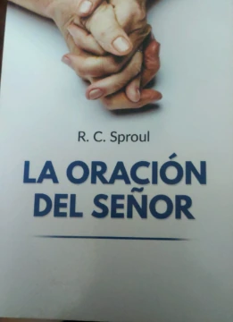

LIBRO 01
La búsqueda de la santidad
Una lectura interactiva para reflexionar, comprender y crecer espiritualmente.
Abrir libroUN ESPACIO PARA DESCUBRIR Y APRENDER
Explora tus lecturas interactivas y encuentra nuevas oportunidades para aprender. Todo en un espacio sencillo, pensado para leer a tu ritmo.
NUESTRA COLECCIÓN
Selecciona el libro que deseas leer.
LIBRO 01
Una lectura interactiva para reflexionar, comprender y crecer espiritualmente.
Abrir libroLIBRO 02
Una lectura interactiva para identificar actitudes cotidianas y reflexionar sobre ellas.
Abrir libro
LIBRO 03
Resúmenes visuales de sus capítulos, con documentos originales y navegación de lectura.
Abrir libroCONSULTA DE PALABRAS
Encuentra rápidamente una palabra, su significado o un ejemplo. Los resultados se filtran automáticamente mientras escribes.
Prueba con otra palabra o una frase diferente.